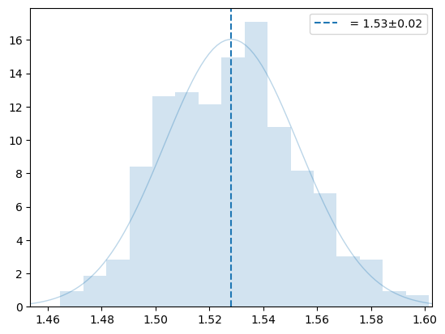
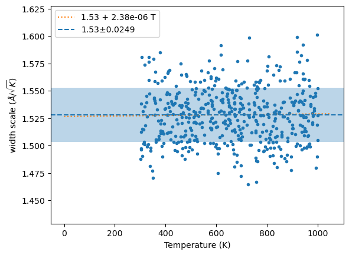
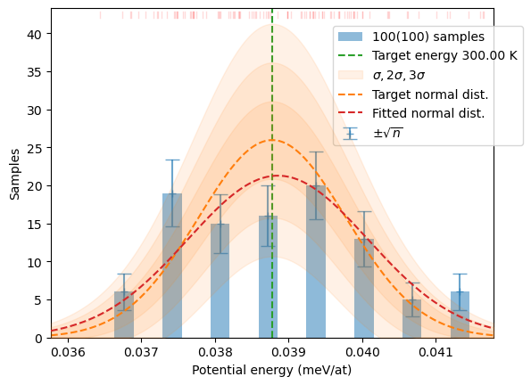
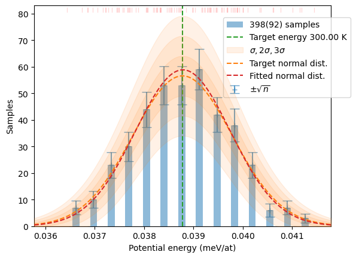
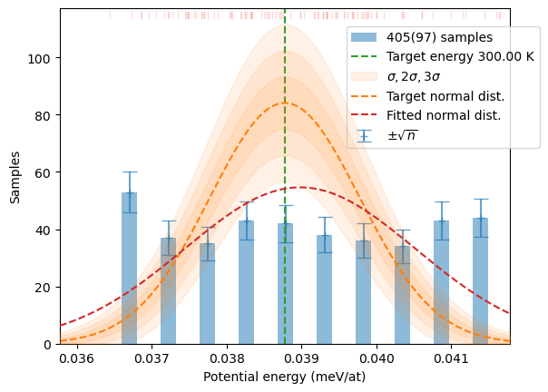
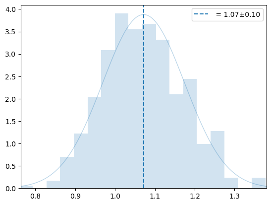
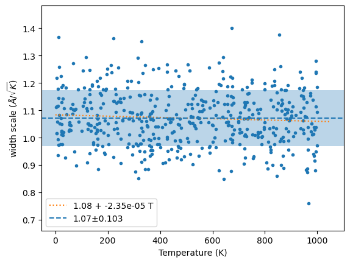
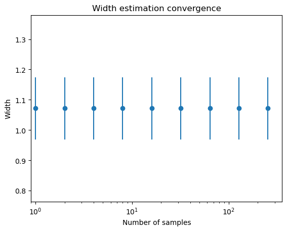
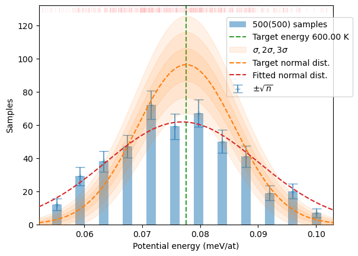

from hecss.core import *
from hecss.monitor import plot_stats, plot_virial_stat, plot_xs_stat, plot_hist
from hecss.monitor import plot_acceptance_history, plot_dofmu_stat
from hecss.util import select_asap_model, create_asap_calculator, calc_init_xscale
from ase.build import bulk
from ase.spacegroup import crystalCore
The core functionality of the HECSS module is provided by the
HECSS class which encapsulates the _sampler generator and exposes sample and generate as public API.
HECSS class
Standard interface to the HECSS library. This class encapsulates the actual sampler implemented in the sample method and provides main functionality of the library through the generate method.
HECSS
HECSS (cryst, calc, width=None, maxburn=20, w_search=True, disp_dist='normal', directory=None, pbar=False)
*Class encapsulating the sampling and weight generation for the HECSS algorithm.
Create the HECSS sampling object. It is intendet to be a single object per crystal cryst used to run samplers for one or more temperatures. The object holds data common to all samplers (structure, calculator etc.). The other parameters are set per sampler. The set of samplers, indexed by temperature is hold inside the HECSS object in the samplers dictionary.
Arguments
- cryst : crystal structure (ASE
Atomsobject) - calc : calculator, must be re-usable, otherwise must be calculator generator
- width : eta, displacement scaling parameter, approx 1.0
- maxburn : max. number of initial burn-in samples
- w_search : use width/eta searching algorithm (default True)
- disp_dist : use different distribution instead of
stats.normas the displacement distribution. - directory : basic calculation directory used by directory based calculators
- pbar : show progress bar during calculations*
HECSS.estimate_width_scale
HECSS.estimate_width_scale (n=1, Tmin=0, Tmax=600, set_scale=True, pbar=None, nwork=None)
*Estimate coefficient between temperature and displacement scale (eta). Calculate energy increase from the n temperatures uniformly distributed between 0 and Tmax and calculate avarage \(\sqrt{E-E0/T}\) which is a width scale for a given temperature: \[
w = \eta\sqrt{T}
\] which comes from the assumed approximate relationship: \[
\frac{E(w(T))-E_0}{T} \approx \mathrm{const} = \eta^2.
\]
Input
n- number of sampling pointsTmin- min sampled temperatureTmax- max sampled temperatureset_scale- set scale parameter in the class after runpbar- show progress bar during calculationnwork- if not None, number of parallel workers to use. Only supported for VASP, 0 => unlimited.
Output
- if wm_out : mean(eta), std(eta), wm
- else : mean(eta), std(eta)
- wm - the nx3 array of: [width, Temperature, (E-E0)/nat]*
HECSS.sample
HECSS.sample (T, N, sentinel=None, sentinel_args={}, nwork=None, **kwargs)
Generate N samples using HECSS._sampler_(ser/aio) generator. sentinel parameter is a call-back function which is called on every sample to decide if the iteration should be stopped early. If it returns True the iteration will be stopped and the current list of samples is returned. The sentinel is called after* generating each sample (i.e. first time after first sample is produced). This may take considerable time at the start since first initial and burn-in samples must be produced.
The sampling loop may be run for N iterations or indefinitely.
INPUT
- T : Target temperature in Kelvin
- N : Number of iterations.
- sentinel :
- delta_sample : Prior width adaptation rate. The default is sufficient in most cases.
- sigma : Range around E0 in sigmas to stop w-serach mode
- eqdelta : Max. speed of amplitude correction from step to step (0.05=5%)
- eqsigma : Half width of linear part of amplitude correction function.
- xi : strength of the amplitude correction term [0-1]
- chi : strength of the amplitude correction term mixing [0-1]
- xscale_init : Initial values of the amplitude correction coefficients. Array with shape
cryst.get_positions().shape. May be also generated withcalc_init_xscalefunction. - Ep0 : T=0 energy (base, no displacements), if None (default) calculate E0.
- modify : pass your own pre-processing function to modify the structure before calculation. The function must return a (e, f) tuple with energy of the structure (e, scalar) and forces (f, array).
- modify_args : dictionary of extra arguments to pass to modify function
- symprec : symmetry detection treshold for spglib functions
- directory : (only for VASP calculator) directory for calculations and generated samples. If left as None, the
calc/{T_goal:.1f}K/will be used and the generated samples will be stored in thesmpl/{i:04d}subdirectories. - reuse_base : None or the base calculator created by restarting the ground state config. If None the base will be recalculated at the start of the run. If the value is a calculator - the energy from this calculator will be used as ground state energy for the calculation. Be careful to have the same setup in calc and reuse_base, otherwise the ground state energy and distribution will be wrong.
- verb : print verbose progress messages for interactive use
Output parameters
- width_list : Output parameter. If not None, store in passed list the sequence of widths.
- dofmu_list : Output parameter. If not None, store in passed list the array of DOF virials relative to temperature (T_goal).
- xscale_list : Output parameter. If not None, store in passed list the array of amplitude correction coefficients (normalized). May be used to generate
xscale_initvalues with the help ofcalc_init_xscalefunction.
OUTPUT
The returns a list of samples from the prior distribution at T=T_goal as list of tuples (number, index, displacement, forces, energy):
- number : sample number, always increasing
- index : integer numbering the samples in the
smplsubdirectory. Index repeats if the sample must be repeated in the sequence. - displacement : set of atomic displacements (in A) in the sample (numpy array)
- forces : set of forces (in eV/A) generated by the displacement
- energy : potential energy of the configuration*
HECSS.generate
HECSS.generate (S, T=None, sigma_scale=1.0, border=False, probTH=0.25, Nmul=4, N=None, nonzero_w=True, debug=False)
*Generate new sample with normal energy probability distribution corresponding to temperature T and size of the system inferred from data. The output is generated by multiplying samples passed in S proportionally to the wegihts generated by get_sample_weights and assuming the final dataset will be Nmul times longer (or the length N which takes precedence). If nonzero_w is True the data multiplyers in the range (probTH, 1) will be clamped to 1, to avoid losing low-probability data. This will obviously deform the distribution but may be beneficial for the interaction model constructed from the data. The data on output will be ordered in increasing energy and re-numbered. The configuration index is retained. The work is directly delegated to the make_sampling function.
Input
data- list of samples generated by HECSS sampler ([n, i, x, f, e])T- temperature in kelvin, mean energy by defaultsigma_scale- scaling factor for variance. Defaults to 1.0.border- make border samples account for unrepresented part of domainprobTH- threshold for probability (N*weight) clamping.Nmul- data multiplication factor. The lenght of output data will be approximatelyNmul*len(data).N- approximate output data length. Takes precedence overNmulnonzero_w- prevent zero weights for data with weights in (probTH, 1) rangedebug- plot diagnostic plots
Output
Weighted, sorted by energy and re-numbered samples as a new list. The data in the list is just reference-duplicated, not copied. Thus the data elements should not be modified. The format is the same as the data produced by HECSS sampler.*
The calculator option in sampler
The sampler needs to create a new Atoms object for distorted structures and needs a new calculator for this object. Most calculators support re-usage of the calculator object so you can pass just a calculator created for this purpose. Other, notably asap3.OpenKIMcalculator, modify the calculator object in-place and make it non-reusable. For such cases you need to pass a generator function in this argument which creates a fresh calculator on each call. The simplest variant is to just use lambda to create the anonymous generator (see examples below).
sampler = HECSS(SiC, lambda : create_asap_calculator(model))Examples
Cubic Silica Carbide (3C-SiC)
model = select_asap_model('SiC')
sys_size = '1x1x1'
sys_size = '2x2x2'
sys_size = '3x3x3'
sys_size = '4x4x4'
sys_size = '5x5x5'
sc = [int(v) for v in sys_size.split('x')]
SiC = bulk('SiC', crystalstructure='zincblende',
a=4.38120844, cubic=True).repeat(tuple(sc))
SiC.calc = create_asap_calculator(model)sampler = HECSS(SiC, lambda : create_asap_calculator(model), pbar=True)sampler.w_list = []
m, s, xscl = sampler.estimate_width_scale(500, Tmin=300, Tmax=1000)
wm = np.array(sampler._eta_list).T
y = np.sqrt((3*wm[1]*un.kB)/(2*wm[2]))
plot_hist(y, '', 0)
plt.legend()
plt.show()
plt.plot(wm[1], y, '.');
x = linspace(0, 1.05*wm[1].max(), 2)
fit = np.polyfit(wm[1], y, 1)
plt.plot(x, np.polyval(fit, x), ':', label=f'{fit[1]:.3g} + {fit[0]:.3g} T')
plt.axhline(m, ls='--', label=f'{m:.3g}±{s:.3g}')
plt.axhspan(m-s, m+s, alpha=0.3)
plt.ylim(m-4*s, m+4*s)
plt.xlabel('Temperature (K)')
plt.ylabel('width scale ($\\AA/\\sqrt{K}$)')
plt.legend();
n = 1
sampler.w_list = []
plt.semilogx()
while n < 500 :
m, s, xscl = sampler.estimate_width_scale(int(n), Tmax=1000)
plt.errorbar(n, m, yerr=s, fmt='o', color='C0')
n *= 2
plt.ylim(m-3*s,m+3*s)
plt.xlabel('Number of samples')
plt.ylabel('Width')
plt.title('Width estimation convergence');sampler.w_list = []
T = 300
N = 100
samples = sampler.sample(T, N)
plot_stats(samples, T, sqrN=True)
distrib = make_sampling(samples, T, nonzero_w=False, debug=False)
plt.show()
plot_stats(distrib, T, sqrN=True)
distrib = sampler.generate(samples, T, 3*N)
plot_stats(distrib, T, sqrN=True)
Olivine in the cubic spinel structure (gamma phase)
omodel = select_asap_model('Universal')
print(f'Using potential model: {omodel}')
oliv = ase.io.read('data/spinel.POSCAR')
oliv.calc = create_asap_calculator(omodel)
print(f'Space group: {spglib.get_spacegroup(get_cell_data(oliv))}')
print('Degrees of freedom in supercell:')
for sym, cnt in Counter(oliv.get_chemical_symbols()).items():
print(f' {sym:2}: {cnt:3d}')Using potential model: LJ_ElliottAkerson_2015_Universal__MO_959249795837_003
Space group: Fd-3m (227)
Degrees of freedom in supercell:
Mg: 16
O : 32
Si: 8print(f'Max. stress: {np.abs(oliv.get_stress()[:3]).max()/un.GPa:.3f} GPa')
print(f'Max. force : {np.abs(oliv.get_forces()).max():.3f} eV/A')Max. stress: 0.881 GPa
Max. force : 0.002 eV/AT = 600
dofmu = []
xsl = []
xi = 1
chi = 1
osampler = HECSS(oliv, lambda : create_asap_calculator(omodel))sampler.w_list = []
m, s, xscl = osampler.estimate_width_scale(500, Tmax=1000)
wm = np.array(osampler._eta_list).T
y = np.sqrt((3*wm[1]*un.kB)/(2*wm[2]))
plot_hist(y, '', 0)
plt.legend()
plt.show()
plt.plot(wm[1], y, '.');
x = linspace(0, 1.05*wm[1].max(), 2)
fit = np.polyfit(wm[1], y, 1)
plt.plot(x, np.polyval(fit, x), ':', label=f'{fit[1]:.3g} + {fit[0]:.3g} T')
plt.axhline(m, ls='--', label=f'{m:.3g}±{s:.3g}')
plt.axhspan(m-s, m+s, alpha=0.3)
plt.ylim(m-4*s, m+4*s)
plt.xlabel('Temperature (K)')
plt.ylabel('width scale ($\\AA/\\sqrt{K}$)')
plt.legend();
n = 1
osampler.w_list = []
plt.semilogx()
while n < 500 :
m, s, xscl = osampler.estimate_width_scale(int(n), Tmax=1000)
plt.errorbar(n, m, yerr=s, fmt='o', color='C0')
n *= 2
plt.ylim(m-3*s,m+3*s)
plt.xlim(0.9,None)
plt.xlabel('Number of samples')
plt.ylabel('Width')
plt.title('Width estimation convergence');
N = 5_00
osamples = [s for s in tqdm(osampler._sampler_ser(T, N,
dofmu_list=dofmu, xscale_list=xsl), total=N)]
plot_stats(osamples, T, sqrN=True)